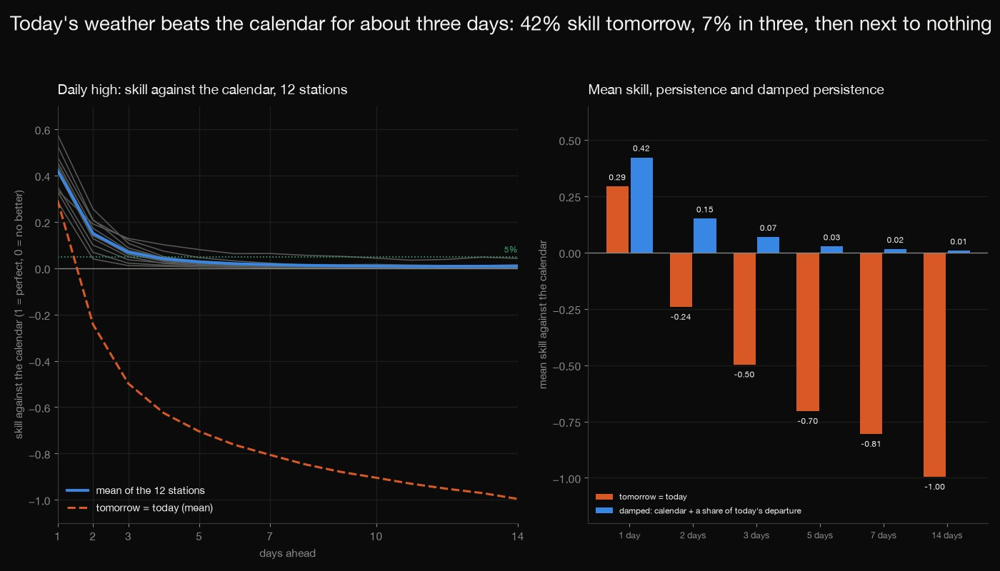
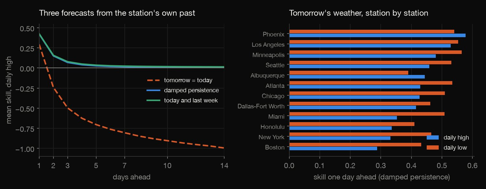
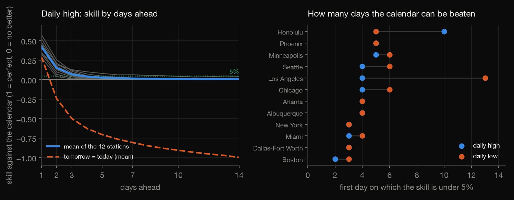
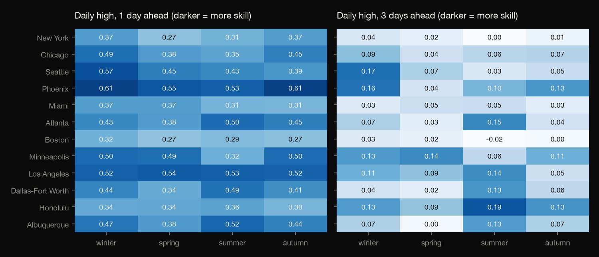
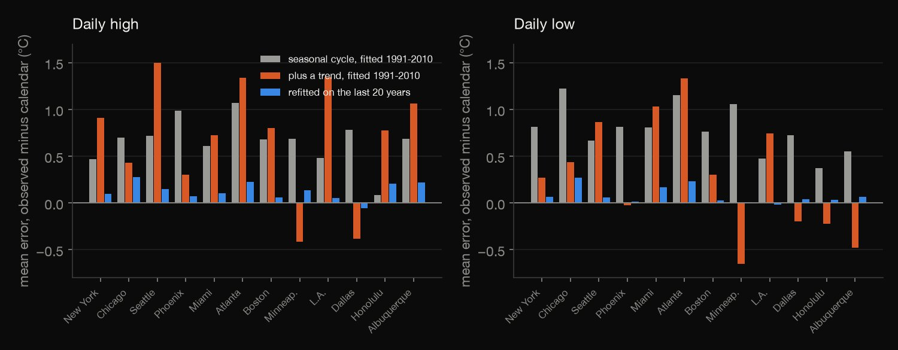
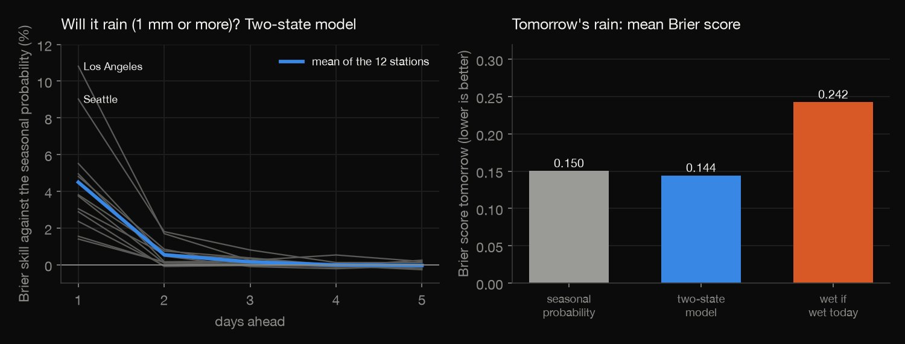

Python · Forecasting · 2026-10
How Far Ahead Does Today's Weather Beat the Calendar?
At twelve US airport stations, a forecast of the daily high from today's departure beats the calendar by 42% tomorrow, 7% in three days and 1% in two weeks; simply repeating today is worse than the calendar from day two, and tomorrow's rain probability improves on the seasonal one by only 4.5%.

Forecasts from each station's own past only, not weather forecasts: a weather service uses a whole region's observations and physical models, and none of that or any published verification was used. Twelve airport stations, 2011 to 2025, one climatology (three harmonics, a linear trend, a 20-year window), mean squared error only. NOAA rebuilds the files daily, so a later download can differ slightly; the checksums are in the repository. Source: NOAA NCEI, GHCN-Daily (US government data; Menne et al. 2012).
01 — The problem
The weather you will get tomorrow is mostly the time of year. How much better than the calendar can a station's own recent weather forecast it, and how many days ahead does that last?
The task follows GeeksforGeeks' "Weather Data Analysis" (time series of station weather), answered as a forecasting test: twelve US airport stations, 1991 to 2025, with every model fitted only on the years before the ones it forecasts.
02 — What I built
Four forecasts against the calendar, scored out of sample:
- The audit: days observed and values dropped by a quality flag at each of the twelve stations.
- The calendar: seasonal cycle and trend, refitted on the previous 20 years for each test year from 2011 to 2025.
- The forecasts: repeat today, damped persistence, and today plus last week, 1 to 14 days ahead, for the high and the low.
- The extras: skill by station and season, the bias of a stale calendar in a warming climate, and tomorrow's rain.
- Check:
check.pyrecounts all 4,227 numbers in plain Python, solving every fit by Gaussian elimination.
03 — How it was built
- 01
Download twelve stations
NOAA's GHCN-Daily by-station files for twelve airports, daily high, low and rain from 1991 to 2025 (about 19 MB, fetched and never committed, with their checksums). Values with a quality flag are dropped. NOAA rebuilds the files every day, so the checksums identify the pull the results come from.
FILES = {f"{s}.csv.gz": BASE + f"by_station/{s}.csv.gz" for s in STATIONS} - 02
Fit damped persistence on the past only
For each test year the calendar (mean, three harmonics and a trend) is fitted on the 20 years before it, and the damping factor for each horizon is the least-squares slope of the future departure on today's, estimated on the same window; the test year is never seen.
phi = float((a[s][ok] * a[s + h][ok]).sum() / (a[s][ok] ** 2).sum()) - 03
Score against the calendar
All four forecasts are scored on the same days by mean squared error, and skill is one minus the ratio to the calendar's, so zero means no better than the calendar and -100% means error variance doubled.
"skill_damped": 1 - m[2] / m[0] - 04
Leave a calendar to go stale
A calendar fitted once on 1991 to 2010 is run unchanged over 2011 to 2025, with and without a trend, and its mean error is compared with the rolling calendar's, to show what warming does to a forecast that is not kept up to date.
bst = fit(X[(YEAR >= 1991) & (YEAR <= 2010)], y[(YEAR >= 1991) & (YEAR <= 2010)]) - 05
Recount it all without the libraries
check.pyreads the station files with the csv module and recomputes every fit, anomaly, forecast, score, bias and Brier score, solving the least-squares problems by Gaussian elimination: 4,227 numbers to a relative tolerance of 1e-8.phi = sxy / sxx; det = m11 * m22 - m12 * m12
04 — Results
The data. 12 stations, 12,784 days each (1991 to 2025), 99.8% or more with a high and a low observed and 4 values dropped by a quality flag. Each forecast is scored on about 5,444 days per station and horizon, 2011 to 2025, with models fitted only on the 20 years before each test year. The seasonal cycle and trend alone (the calendar) explain 29% to 89% of the variance of the next day's temperature, so what is left to forecast is the departure from it.
Today's weather beats the calendar for about three days. The table is the mean skill over the twelve stations for the daily high, one minus the ratio of mean squared errors to the calendar's: Repeat is "tomorrow will be like today", Damped adds a fitted share of today's departure from the calendar, and Week adds the last seven days' mean departure. The damped forecast is 42% better than the calendar tomorrow, 7% in three days and 1% in fourteen; the week adds almost nothing.
| Days | Repeat | Damped | Week |
|---|---|---|---|
| 1 | 29% | 42% | 42% |
| 2 | -24% | 15% | 16% |
| 3 | -50% | 7% | 8% |
| 5 | -70% | 3% | 3% |
| 7 | -81% | 2% | 2% |
| 14 | -100% | 1% | 1% |

Repeating today is worse than the calendar from day two. Its skill is 29% tomorrow and -24% at two days, heading for -100% once the weather has forgotten today (repeating it then doubles the error variance). At 19 of the 24 station-and-element combinations it is already worse at two days, and at the other 5 at three.

Some stations hold on longer. The table gives tomorrow's damped skill for the high and the low, and Days the number of days for which it stays above 5% (high / low). Phoenix, where the weather changes least, has the most skill tomorrow (58% for the high) and Boston the least (29%); the longest memory is the ocean's, 12 days for the Los Angeles low and 9 for the Honolulu high.
| Station | High | Low | Days |
|---|---|---|---|
| Phoenix | 58% | 54% | 4 / 4 |
| Los Angeles | 53% | 55% | 3 / 12 |
| Minneapolis | 48% | 56% | 4 / 5 |
| Seattle | 46% | 53% | 3 / 5 |
| Albuquerque | 44% | 39% | 3 / 3 |
| Atlanta | 43% | 53% | 3 / 3 |
| Chicago | 43% | 51% | 3 / 5 |
| Dallas-Fort Worth | 42% | 46% | 2 / 2 |
| Miami | 35% | 51% | 2 / 3 |
| Honolulu | 34% | 41% | 9 / 4 |
| New York | 33% | 47% | 2 / 2 |
| Boston | 29% | 43% | 1 / 2 |
The seasons matter less than the station. Tomorrow's skill for the high runs from 27% to 61% across all station-seasons; at Minneapolis it is 50% in winter and 32% in summer. Three days ahead the skill is 6% at the median station-season and at most 19% (Honolulu in summer).

An old calendar runs cold. The table is the mean error in degrees C of tomorrow's forecast over 2011 to 2025, observed minus calendar, over the twelve highs and twelve lows; Fixed means fitted once on 1991 to 2010 and never updated, Refitted yearly means fitted on the 20 years before each test year. A seasonal cycle fitted once on 1991 to 2010 under-forecasts by 0.72 °C on average; adding a trend fitted on the same years extrapolates badly (from -0.65 to 1.50 °C); refitting on the last 20 years each year keeps it between -0.05 and 0.27 °C. In root-mean-square error the stale calendars cost a median 1% (trend) and 2% (no trend), at worst 22% and 5%.
| Calendar | Mean | Range |
|---|---|---|
| Fixed, no trend | 0.72 | 0.09 to 1.22 |
| Fixed, trend | 0.49 | -0.65 to 1.50 |
| Refitted yearly | 0.10 | -0.05 to 0.27 |

Rain is hardly forecastable from the station's own history. It rains (1 mm or more) on 7% (Phoenix) to 34% (Seattle) of days. A two-state model, with a separate seasonal curve after a wet and after a dry day, improves on the seasonal probability of rain tomorrow by 4.5% on average (1.4% to 10.8%), by 0.5% in two days and by nothing after that. "Wet if wet today" is worse than the seasonal probability (Brier score 0.24 against 0.15).

05 — What I'd do next
- Compare these baselines with the forecasts of a weather service for the same days, to see how much more than a station's own history physical models add.
- Add neighbouring stations as predictors, since weather arrives from upwind, and see how far skill extends.
- Score the extremes (heat waves, freezes, heavy rain) rather than the mean squared error, which is where forecasts earn their keep.